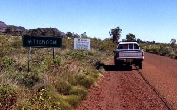
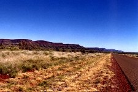
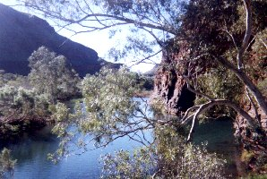

A Trip to the Blue Sky Mine
Wittenoom, Western Australia. The old diesel's seen a bit of dust recently, but around here the dust is blue, not red, and it'll kill you.
And they make sure you know it. Driving in through Yampire Gorge there are signs every couple of k's advising you to stay in your car and keep the windows firmly shut. Don't know what you're supposed to do if you blow a tyre. And they helpfully suggest that you don't let your kids play in the mine tailings.

Nothing could be longer than a corrugated road
And no one ever follows where the road trains go
The road into Wittenoom from the east is a long, straight drive. To the left, the mountains of the Hamersley Range provide some of the most spectacular scenery in the country. On the other side of the road is the flat desolate mulga and spinifex plain, where you can quickly forget what a hill looks like.
Entering Wittenoom itself there's no friendly Welcome, Please Don't Litter. Just a big sign letting you know that if you breathe in too much you'll probably die.

But if I work all day on the blue sky mine
There'll be food on the table tonight
If I walk up and down on the blue sky mine
There'll be pay in your pocket tonight
The mine shut down in 1966, after a couple of thousand workers had been condemned to die from asbestosis and mesothelioma. A lot of the men had come from post-war Europe to make a new life for themselves and their families in the lucky country. Perhaps they suspected the mine had something to do with the illnesses, but the company wouldn't let workers in if they knew it was a health hazard, would they? And anyway, if you don't work you and your family don't eat. It's a long way to go looking for another job.
It's like driving through a ghost town. And it nearly is. The government tried to close the place down in 1979, withdrawing all services and declaring it a health risk area. But some refused to leave the homes they'd been in for decades, and stubbornly hang on to the only life they've known. There was a half-hearted attempt at a cleanup operation in the early eighties, but the reality is that cleaning up just disturbs the dust and increases the risk factor. Who's going to take on a job like that? Anyway, for years they used the dust-filled mine tailings for building roads, and as landfill. It'll take more than rain to wash clean the streets of this town. There are less than thirty living here these days, and next to no facilities. A caravan park of sorts, with a bit of a shop included ("A pie? I'll have to heat one up for you. Be ready in a couple of hours."). Sometimes you can get fuel, but don't count on it ("Diesel? Sorry, the guy with the diesel pump's away on holidays.").
So you drive into Wittenoom Gorge, to the mine site itself. It's not as deep or spectacular as the other gorges in the Karijini, but it's still breathtaking. It's just hard to shake from your mind the idea that invisible fibres of blue asbestos are all around. It's very quiet, eerily so, and although water is as prevalent here as in the other gorges, here it seems to be in still pools rather than flowing streams and waterfalls. Despite it's beauty, a swim is not an inviting prospect.
And if the blue sky mining company won't come to my rescue
If the sugar refining company won't save me
Who's gonna save me?
The old road leads through to the old workers homes, deep in the gorge. Driving slowly past, you assume these were abandoned with the mine, but then you realise some of the lawns and gardens are well kept, and there's a car or two alongside some of the fibro buildings. But no sign of life, other than a stand with a blackboard alongside, a chalked message lets you know you can buy home made jam and drinks on weekends and public holidays.
At the far end of the gorge you find the old power station. The road ends, and you have to get out of the safety of your vehicle and follow the broken remains of the old road on foot. There have been some extraordinary feats of engineering achieved here, with powerlines hoisted high above the gorge floor, on poles somehow positioned in the side of the cliff a hundred metres high.

Back in the car, and back to the turnoff to the mine itself. It's easy to see from quite a way back. The mine tailings are still just dumped where they fell, making one of the cliff walls completely black in contrast to the deep red all around, and there are piles of black shit all over the gorge floor, all around the approach road. The mine itself is another incredible feat of engineering, perched high on the cliff face. But if you thought this was a pretty unfriendly sort of place before, the sign on the gate half way to the mine makes it very clear that visitors are not welcome beyond this point. They don't even give you room to turn around, so you have to reverse out into a pile of tailings until there's room to get the car around. There doesn't seem to be anybody about, but as you get the camera out you half expect some security guard to come out from behind a tree, beat you up and take the film. And playing Oils tapes in the car would probably render that liable to confiscation too.
Some have sailed from a distant shore
And the company takes what the company wants
Nothing's as precious as a hole in the ground

Driving back out of the gorge, the mood is one of quiet reflection. Perhaps if you didn't know the background to this place, it would be just another piece of fantastic scenery to visit. But I suspect that even someone ignorant of the history, someone who'd never heard of asbestos, would find this place just as forbidding. It's just the way it feels here - there are plenty of signs that life was once here, but it's also pretty clear that life left in a bit of a hurry. "Haunted" may well be a state of mind rather than reality - knowing that someone died in a particular place makes you look at that place differently. And while most of the victims of the blue sky mine actually drew their final breath in a hospital or nursing home miles from here, you know that this place is where they really died.

But if I work all day on the blue sky mine…
…who's gonna save me?
Written by Jeff Scott
Photos by Jeff and Jane Scott
Inspired by a visit to Wittenoom Gorge, July 1998
Lyrics quoted from "Blue Sky Mine" and "Gunbarrel Highway", written by Midnight Oil
May be reproduced on condition that it is reproduced in full including these credits and conditions.